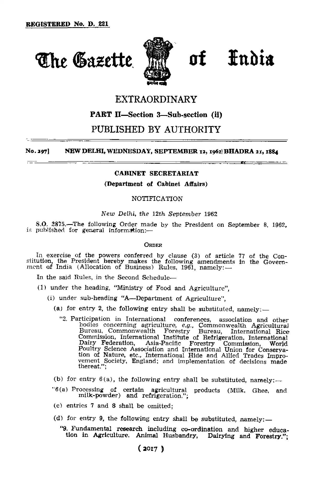
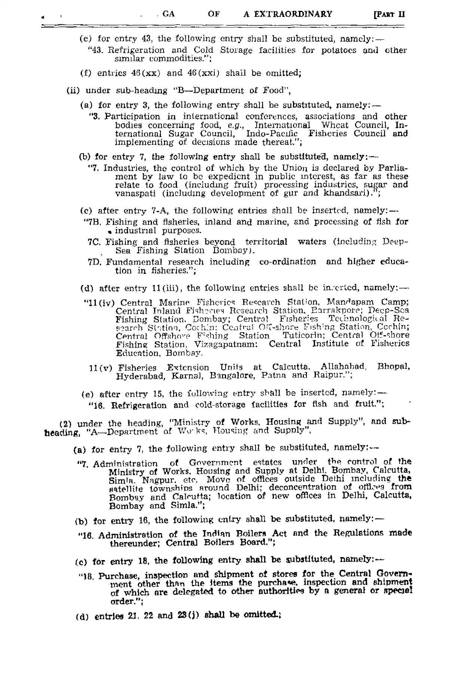
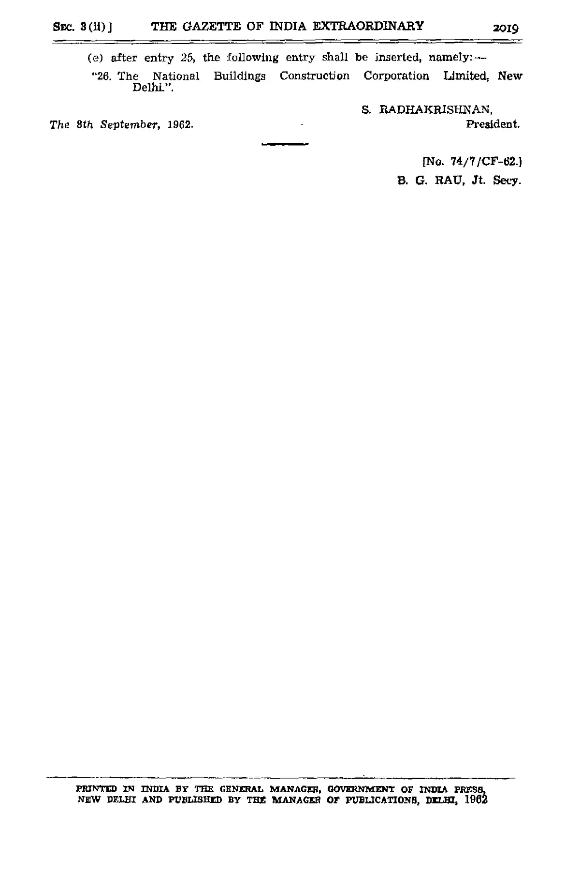

Amendment #10 (S.O. 2875, 1962)
16 changes: 0 to the First Schedule, 16 to the Second Schedule. 14 applied2 not applied
The order, page by page
Page 1 of 4

1234Schedule 2 › Ministry of Food and Agriculture › Department of Agriculture › entry 2
- 2. Participation in International conferences, association and other bodies concerning agriculture, e.g., Commonwealth Agricultural Bureau, Commonwealth Forestry Bureau, International Rice Commission, International Institute of Refrigeration, International Dairy Federation, Asia-Pacific Forestry…
applied at schedule 2 › ministry MINISTRY OF FOOD AND AGRICULTURE › department A › part I › entry 2 in the Rules after #10
Schedule 2 › Ministry of Food and Agriculture › Department of Agriculture › entry 6 › item a
- 6.
- a. Processing of certain agricultural products (Milk, Ghee, and milk-powder) and refrigeration.
applied at schedule 2 › ministry MINISTRY OF FOOD AND AGRICULTURE › department A › part I › entry 6 › item a in the Rules after #10
Schedule 2 › Ministry of Food and Agriculture › Department of Agriculture › entry 7; Schedule 2 › Ministry of Food and Agriculture › Department of Agriculture › entry 8
applied at schedule 2 › ministry MINISTRY OF FOOD AND AGRICULTURE › department A › part I › entry 7 in the Rules after #10
Schedule 2 › Ministry of Food and Agriculture › Department of Agriculture › entry 9
- 9. Fundamental research including co-ordination and higher education in Agriculture. Animal Husbandry, Dairying and Forestry.
applied at schedule 2 › ministry MINISTRY OF FOOD AND AGRICULTURE › department A › part I › entry 9 in the Rules after #10
Page 2 of 4

56789101112131415Schedule 2 › Ministry of Food and Agriculture › Department of Agriculture › entry 43
- 43. Refrigeration and Cold Storage facilities for potatoes and other similar commodities.
applied at schedule 2 › ministry MINISTRY OF FOOD AND AGRICULTURE › department A › part IV › entry 43 in the Rules after #10
Schedule 2 › Ministry of Food and Agriculture › Department of Agriculture › entry 46 › item xx; Schedule 2 › Ministry of Food and Agriculture › Department of Agriculture › entry 46 › item xxi
applied at schedule 2 › ministry MINISTRY OF FOOD AND AGRICULTURE › department A › part IV › entry 46 › item xx in the Rules after #10
Schedule 2 › Ministry of Food and Agriculture › Department of Food › entry 3
- 3. Participation in international conferences, associations and other bodies concerning food, e.g., International Wheat Council, International Sugar Council, Indo-Pacific Fisheries Council and implementing of decisions made thereat.
applied at schedule 2 › ministry MINISTRY OF FOOD AND AGRICULTURE › department B › group_heading I › entry 3 in the Rules after #10
Schedule 2 › Ministry of Food and Agriculture › Department of Food › entry 7
- 7. Industries, the control of which by the Union is declared by Parliament by law to be expedicnt in public interest, as far as these relate to food (including fruit) processing industries, sugar and vanaspati (including development of gur and khandsari).
applied at schedule 2 › ministry MINISTRY OF FOOD AND AGRICULTURE › department B › group_heading I › entry 7 in the Rules after #10
after Schedule 2 › Ministry of Food and Agriculture › Department of Food › entry 7-A
- 7B. Fishing and fisheries, inland and marine, and processing of fish for ■ industrial purposes.
- 7C. Fishing and fisheries beyond territorial waters (including Deep- Sea Fishing Station Bombay).
- 7D. Fundamental research including co-ordination and higher education in fisheries.
not applied (the change could not be placed in the Rules as read; see How this document was read)
after Schedule 2 › Ministry of Food and Agriculture › Department of Food › entry 11 › item iii
- lv. Central Marine Fisheries Rescarch Station, Mandapam Camp Central Inland Fisheries Research Station, Parrakpore; Decp-Sca Fishing Station. Dombay; Central Fisheries Technological Research Station, Cochin: Central Off-shore Fishing Station, Cochin Central Offshore Fishing Station Tuticorin; Central…
- v. Fisheries Extension Units at Calcutta, Allahabad, Bhopal Hyderabad, Karnal, Bangalore, Patna and Raipur.
applied at schedule 2 › ministry MINISTRY OF FOOD AND AGRICULTURE › department B › group_heading IV › entry 11 › item lv in the Rules after #10
after Schedule 2 › Ministry of Food and Agriculture › Department of Food › entry 15
- 16. Refrigeration and cold-storage facilities for fish and fruit.
applied at schedule 2 › ministry MINISTRY OF FOOD AND AGRICULTURE › department B › group_heading IV › entry 16 in the Rules after #10
Schedule 2 › Ministry of Works, Housing and Supply › Department of Works, Housing and Supply › entry 7
- 7. Administration of Government estates under the control of the Ministry of Works, Housing and Supply at Delhi, Bombay, Calcutta Simla. Nagpur. etc. Move of offices outside Delhi including the satellite townships around Delhi; deconcentration of offices from Bombay and Calcutta; location of new…
applied at schedule 2 › ministry MINISTRY OF WORKS, HOUSING & SUPPLY › department A › entry 7 in the Rules after #10
Schedule 2 › Ministry of Works, Housing and Supply › Department of Works, Housing and Supply › entry 16
- 16. Administration of the Indian Boilers Act and the Regulations made thereunder; Central Boilers Board.
applied at schedule 2 › ministry MINISTRY OF WORKS, HOUSING & SUPPLY › department A › entry 16 in the Rules after #10
Schedule 2 › Ministry of Works, Housing and Supply › Department of Works, Housing and Supply › entry 18
- 18. Purchase, inspection and shipment of stores for the Central Government other than the items the purchase. inspection and shipment of which are delegated to other authorities by a general or special order.
applied at schedule 2 › ministry MINISTRY OF WORKS, HOUSING & SUPPLY › department A › entry 18 in the Rules after #10
Schedule 2 › Ministry of Works, Housing and Supply › Department of Works, Housing and Supply › entry 21; Schedule 2 › Ministry of Works, Housing and Supply › Department of Works, Housing and Supply › entry 22; Schedule 2 › Ministry of Works, Housing and Supply › Department of Works, Housing and Supply › entry 28 › item j
not applied (the change could not be placed in the Rules as read; see How this document was read)
Page 3 of 4

16after Schedule 2 › Ministry of Works, Housing and Supply › Department of Works, Housing and Supply › entry 25
- 26. The National Buildings Construction Corporation Limited, New Delhi.
applied at schedule 2 › ministry MINISTRY OF WORKS, HOUSING & SUPPLY › department A › entry 26 in the Rules after #10
Page 4 of 4
How this document was read
Edits to the reading
| Date | By | Edit | Before → after |
|---|---|---|---|
| 14 November 2026 | mukundesh | word corrected | |
| 14 November 2026 | mukundesh | word removed |
Known issues
| Change | Issue | Known as |
|---|---|---|
| 9 | change 9: no entry 7–A under schedule 2 › ministry MINISTRY OF FOOD AND AGRICULTURE › department B | Entries not in the state |
| 15 | change 15: no entry 28 under schedule 2 › ministry MINISTRY OF WORKS, HOUSING & SUPPLY › department A | Entries not in the state |
From the Government of India (Allocation of Business) Rules, 1961 and their amendments, as published by the Cabinet Secretariat (cabsec.gov.in), read by orgpedia. The readings of the older scanned gazettes have known gaps.